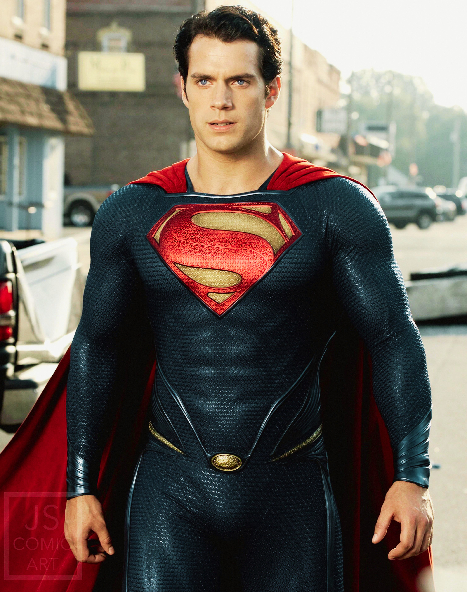

SUPERMAN / CLARK KENT / KAL-EL
Superman ou Super-Homem é um super-herói de histórias em quadrinhos publicadas pela DC Comics. O personagem, entretanto, desde os anos 1930, já foi adaptado para diversos outros meios, como cinema, rádio, televisão, literatura e videogame. Superman foi criado pela dupla de autores de quadrinhos Joe Shuster e Jerry Siegel. Sua primeira aparição aconteceu no verão de 1938, na revista Action Comics #1. O personagem nasceu no planeta fictício Krypton e tinha o nome de Kal-El. Foi enviado à Terra por seu pai cientista, Jor-El, momentos antes de Krypton explodir. O foguete aterrissou na cidade de Smallville (por alguns anos, foi traduzida no Brasil como Pequenópolis), onde o jovem Kal-El foi descoberto pelo casal de fazendeiros Jonathan Kent e Martha Kent. Conforme cresceu, Kal-El descobriu que tinha capacidades sobre-humanas. Quando não está com o tradicional uniforme azul e vermelho, vive com Lois Lane e Jimmy Olsen como Clark Kent, um repórter/jornalista no Planeta Diário da cidade de Metrópolis. É um dos mais importantes personagens da cultura pop ocidental, sendo o primeiro herói dos quadrinhos a ter uma revista intitulada com seu nome: Superman #1. Além disso, Superman foi licenciado e adaptado para diversas mídias, desde rádio até televisão e cinema.